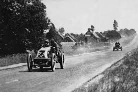
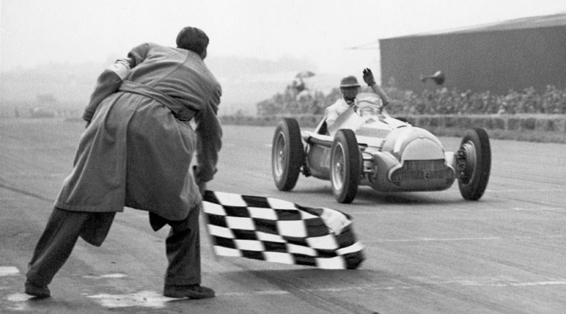
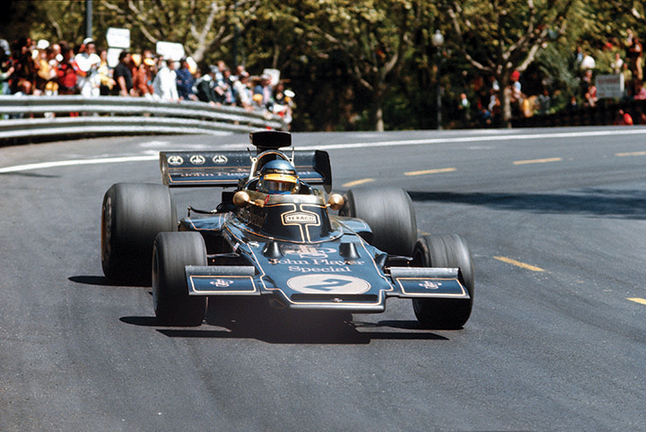
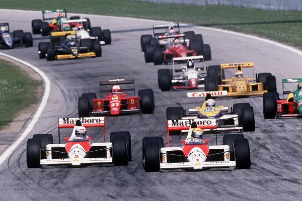
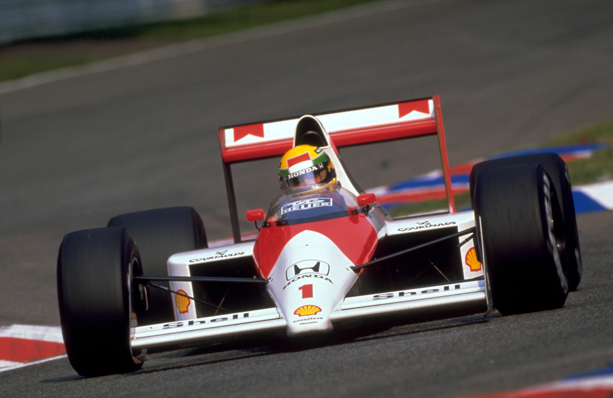
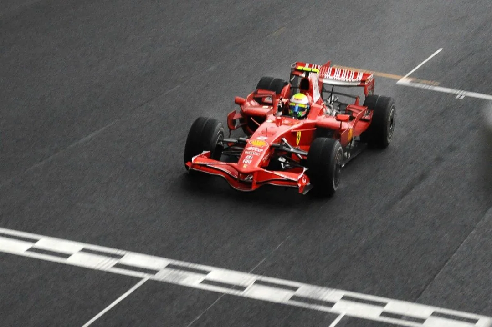
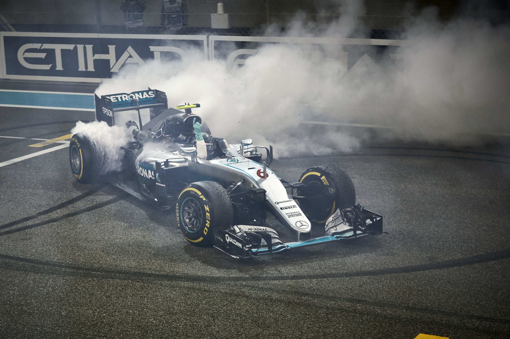
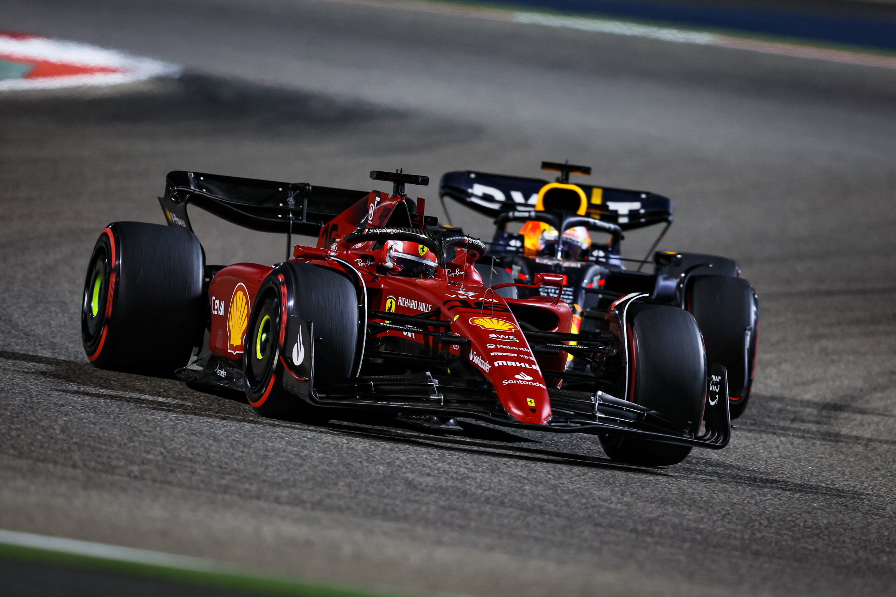

- Home
- Categoria
- Equipes
- Quiz
Oficialmente, a Fórmula 1 foi criada em 1950 pela Federação Internacional de Automobilismo (FIA). No entanto, a história da categoria remonta ao final do século XIX, quando as primeiras corridas de carros foram disputadas na Europa. Como na época não existiam circuitos, as corridas aconteciam em estradas. Alguns historiadores apontam que uma corrida entre Paris e Bordeaux, na França, em 1895, tenha sido o marco inicial da F1. Essa corrida durou 48 horas e teve um percurso de 1200 quilômetros.
Há quem considere o ano de 1901 como o início da Fórmula 1, pois nesse ano foi disputada a primeira corrida com o nome de Grande Prêmio (GP). Na ocasião, a cidade de Le Mans sediou o Grande Prêmio da França. Atualmente, Le Mans não recebe a Fórmula 1, mas é considerada um dos mais importantes circuitos do mundo.
Entre 1901 e 1949, vários GPs foram disputados ao redor da Europa, em países como França, Itália, Bélgica, Inglaterra, Alemanha, Mônaco e Espanha. Os GPs só não aconteceram durante a Primeira Guerra Mundial e a Segunda. No decorrer das guerras, os pilotos participaram de corridas nos Estados Unidos, como em Indianápolis, outro grande circuito do automobilismo.
Depois da Segunda Guerra Mundial, a FIA decidiu elaborar um campeonato reunindo os principais Grandes Prêmios da Europa e deu a ele o nome de Fórmula 1. A nova competição reuniria as maiores fabricantes de carros do continente, como Alfa Romeo, Ferrari, Maserati e Mercedes.

A primeira corrida da Fórmula 1 foi realizada em 10 de abril de 1950, quando o argentino Juan Manuel Fangio, pilotando um Maserati, venceu o Grande Prêmio de Pau, na França. No entanto, essa corrida não fez parte do campeonato. A primeira corrida oficial de F1 aconteceu um mês depois, no dia 13 de maio, no circuito de Silverstone, na Inglaterra, e teve como vencedor o italiano Nino Farina, pilotando um Alfa Romeo.
Nino Farina, Juan Manuel Fangio e Alberto Ascari, outro italiano, dominaram a Fórmula 1 no início da década de 1950. Farina foi o primeiro campeão, Ascari ganhou o campeonato em 1952 e 1953, de Ferrari, e o argentino Fangio levou o título em cinco oportunidades (1951, 1954, 1955, 1956 e 1957). Uma curiosidade sobre Fangio é que ele foi campeão pilotando por quatro equipes: Alfa Romeo, Maserati, Ferrari e Mercedes.
O campeão mundial de Fórmula 1 de 1958 foi o britânico Mike Hawthorn, pilotando pela equipe Ferrari. Ele conquistou seu único título com apenas 42 pontos, superando Stirling Moss por apenas um ponto, marcando a primeira vez que um britânico venceu o campeonato.
Em 1959, Cooper-Climax T51 revolucionou a Fórmula 1 ao se tornar o primeiro carro de motor traseiro a vencer o Campeonato Mundial de Pilotos e Construtores. Pilotado por Jack Brabham, o carro leve e ágil da Cooper Car Company superou as equipes com motores dianteiros convencionais, mudando para sempre o design da F1.

A década de 1960 ficou marcada como a “Era Britânica”. Isso porque, nesse período, surgiram grandes nomes do automobilismo inglês, como Jim Clark, Jackie Stewart, John Surtees e Graham Hill. Ao todo, eles ganharam seis títulos entre 1961 e 1970.
Em 1967, quatro das 12 corridas da temporada já eram disputadas fora da Europa. Grandes Prêmios foram disputados na África do Sul, Canadá, México e Estados Unidos. No ano seguinte, uma fabricante de motores de fora da Europa ganhou o campeonato pela primeira vez, a americana Ford, que equipava os carros da Lotus.
A Ford trouxe para a F1 os motores V8, uma configuração de motor de combustão interna em que oito cilindros estão dispostos em duas bancadas de quatro cilindros. Entre 1968 e 1982, a Ford ganhou 12 dos 15 campeonatos. Outra inovação dessa década foi a configuração do cockpit (banco onde os pilotos sentam-se), de modo que os pilotos ficassem mais inclinados. Antes, eles sentavam-se em uma posição de 90º. Nessa década também surgem os primeiros carros com aerofólio traseiro, o que trouxe uma grande evolução na parte aerodinâmica.

A década de 1970 foi bastante movimentada na Fórmula 1, com inovações nos carros, duelos memoráveis e pilotos que entraram para a história. Começando pelos últimos, nessa década os nomes de destaque foram Gilles Villeneuve, Niki Lauda, James Hunt, Jody Scheckter, Alan Jones, Mario Andretti e o primeiro brasileiro campeão da F1, Emerson Fittipaldi.
Fittipaldi correu na Fórmula 1 entre 1970 e 1980, ganhando os campeonatos de 1972, pela Lotus, e 1974, pela McLaren. Em 1975, em uma decisão considerada ousada, abandonou a melhor equipe da F1 na época para fundar com o irmão a Copersucar Fittipaldi. A primeira e única equipe brasileira na Fórmula 1 não teve muito sucesso e fechou as portas em 1982.
O piloto austríaco Niki Lauda foi o grande destaque da década de 1970, ganhando os campeonatos de 1975 e 1977 pela Ferrari. Em 1976, perdeu o campeonato para o inglês James Hunt após sofrer um grave acidente em Nürburgring-Nordscheleife na Alemanha que quase lhe custou a vida. Lauda e Hunt protagonizaram várias disputas na pista, o que inspirou o filme Rush, de 2013. O austríaco também ganhou o campeonato de 1984 e trabalhou nas equipes Jaguar, na década de 2000, e Mercedes, na década de 2010.
Em relação às inovações, a Renault trouxe, em 1977, os motores turbo, que ficaram na categoria até 1988. As equipes também investiam mais na aerodinâmica, visando o desenvolvimento do efeito-solo (o ar “empurra” o carro para baixo, deixando-o mais “preso” ao solo, o que aumenta a velocidade). Tanto o motor turbo quanto o efeito-solo foram banidos da categoria na década de 1980, principalmente depois de acidentes mortais, como o do canadense Gilles Villeneuve, em 1982.

A década de 1980 é a de maior sucesso do Brasil na Fórmula 1, com cinco títulos: 1981, 1983 e 1987, com Nelson Piquet, e 1988 e 1990, com Ayrton Senna. Piquet ganhou seus dois primeiros títulos pela Brabham, e o último, pela Willams. Seus principais rivais eram Keke Rosberg, Carlos Reutemann, Alan Jones, Rene Arnoux, Alain Prost e Nigel Mansell, além de Senna.
Os maiores campeões da década foram Nelson Piquet e o francês Alain Prost, que também conquistou três mundiais: 1985, 1986 e 1989. Piquet era um forte adversário de Prost, mas o principal rival do francês foi outro brasileiro: Ayrton Senna. A rivalidade entre Senna e Prost é considerada a maior da história Fórmula 1.
Senna chegou à McLaren em 1988 para ser companheiro de equipe de Prost, que já era bicampeão de F1. O ídolo brasileiro havia se destacado em equipes menores e viu na McLaren a grande chance de vencer Prost. Nos dois anos em que ambos pilotaram por ela, cada um venceu uma vez: Senna, em 1988, e Prost, em 1989.

A década de 1990 foi marcada pelo desenvolvimento da eletrônica nos carros de corrida. A Willams inovou com a suspensão ativa (controlada por meios eletrônicos) e desbancou a supremacia da McLaren que já durava alguns anos. Senna foi campeão em 1990 e 1991, mas, nos dois anos seguintes, não conseguiu acompanhar a Willams, que venceu em 1992, com o inglês Nigel Mansell, e em 1993, com Alain Prost.
A aposentadoria de Prost depois do campeonato de 1993 abriu as portas da Willams para Senna em 1994. Infelizmente, o brasileiro sofreu um grave acidente na terceira corrida do campeonato, em Ímola, e faleceu aos 34 anos. Nesse ano, o campeão foi o alemão Michael Schumacher, pela Benetton.
Schumacher disputou todos os títulos da Fórmula 1 entre 1994 e 2006. Na década de 1990, ganhou em 1994 e 1995, pela Benetton, e em 2000, pela Ferrari. Nos demais anos, perdeu para as Willams de Damon Hill, em 1996, e Jacques Villeneuve, em 1997, e para a McLaren do finlandês Mika Hakkinen, em 1998 e 1999.

A década de 2000 começou com a supremacia da Ferrari, com Michael Schumacher ganhando os campeonatos de 2001 a 2004, sendo até hoje o único heptacampeão mundial. Entre 2000 e 2005, foi companheiro de equipe do brasileiro Rubens Barrichello, recordista de corridas na F1 (326). Em 2006, Schumacher foi companheiro de outro brasileiro, Felipe Massa. No final desse mesmo ano, o heptacampeão anunciou aposentadoria, mas retornaria em 2010 para correr até 2012.
Os principais pilotos dessa década, além de Schumacher, foram: Fernando Alonso (campeão em 2005 e 2006 pela Renault), Juan Pablo Montoya, David Coulthard, Kimi Raikkonen (campeão em 2007 pela Ferrari), Jenson Button (campeão em 2009 pela Brawn), os brasileiros Barrichello e Massa, Lewis Hamilton (campeão em 2008 pela McLaren), e Sebastian Vettel (campeão em 2010 pela Red Bull). Os dois últimos também fizeram sucesso na década seguinte.
As temporadas entre 2001 e 2010 foram marcadas pelo desenvolvimento dos motores, o que resultou nas maiores velocidades registradas na F1. Em 2005, com um motor BMW v10, a Willams de Juan Pablo Montoya alcançou os 372 km/h. O perigo da alta velocidade fez a categoria trocar os motores v10 pelos v8, em 2006.
A perda de potência levou os engenheiros a desenvolverem soluções para os carros, resultando em vários “apêndices” aerodinâmicos. Esse excesso dificultou as ultrapassagens por gerar turbulência no carro de trás. Para aumentar as ultrapassagens, os apêndices foram proibidos e os carros passaram a ter um visual mais “limpo” no final da década.

No início dos anos 2010, os campeonatos foram conquistados pela Red Bull Team (RBR) com o piloto alemão Sebastian Vettel. Em 2010, com apenas 23 anos e 134 dias,
Vettel tornou-se o mais jovem campeão da Fórmula 1. Ele também ganhou nos três anos seguintes.
A última década confirmou o talento do inglês Lewis Hamilton, que igualou-se a Michael Schumacher em número de títulos. Pilotando uma Mercedes, Hamilton conseguiu
os títulos das temporadas 2014, 2015, 2017, 2018, 2019 e 2020. A Mercedes também venceu em 2016, mas com o alemão Nico Rosberg.
Hamilton conseguiu superar os recordes de vitórias e pole positions (primeira posição na classificação para a corrida) de Michael Schumacher e do seu ídolo, Ayrton
Senna. Como ainda tem alguns anos de carreira, o inglês pode tornar-se o maior piloto de F1 de todos os tempos.
Também pela Red Bull, o holandês Max Verstappen tornou-se o piloto mais jovem a vencer uma corrida na F1, com 18 anos e 7 meses. A juventude dos pilotos é uma
característica da atual Fórmula 1.
A adoção dos motores híbridos não agradou os fãs da categoria, pois emitem menos barulho. O “ronco” dos motores é um dos principais atrativos da Fórmula 1, e os fãs temem que as corridas fiquem “silenciosas” no futuro.


O início desta década foi marcada pela queda do domínio de Lewis Hamilton na Formula 1. O ano de 2021 é considerado por muitos um dos campeonatos mais disputados de toda a história da F1, a disputa entre Max Verstappen e Lewis Hamilton durou desde a primeira volta da 1° corrida da temporada, até ultima volta da ultima corrida. Após um intenso ano de disputas, Max Verstappen se consagrou campeão após uma polêmica relargada no final do GP de Abu Dhabi de 2021, assim, quebrando a hegêmonia de Hamilton que durava 4 anos consecutivos.
Em 2022, a Formula 1 passou por mais uma mudança no regulamento, este ano marcou a volta do Efeito Solo à categoria, após 40 anos desde o seu banimento. Esta era foi marcada pelo domínio absoluto de Max Verstappen em 2022 e 2023. Em 2024, o piloto holandês sofreu dificuldades após o carro de sua equipe Redbull sofrer uma abrupta perda de desempenho na metade da temporada por conta de falhas de engenharia e precisou disputar com a McLaren que tiveram sucesso em aprimorar o seu carro e se tornaram o melhor carro do grid, mas mesmo assim se consagrou campeão naquele ano.
Em 2025, a McLaren continuou com a diferença de performance avassaladora em relação a seus concorrentes e a Redbull continuou com dificuldades no desenvolvimento de seu carro. A primeira metade da temporada foi marcada pelo domínio da Mclaren, com algumas disputas vencidas por Max Verstappen ou outros pilotos como George Russel. A segunda metade da temporada foi onde Max Verstappen mostrou o por quê ele é um dos melhores pilotos desta década, após uma recuperação insana no campeonato o holandês retirou uma diferença de mais de 100 pontos em relação ao lider e quase se consagrou campeâo pela 5° vez, mas a esperança foi quebrada após a vitória de Lando Norris na última corrida do ano em Abu Dhabi.
